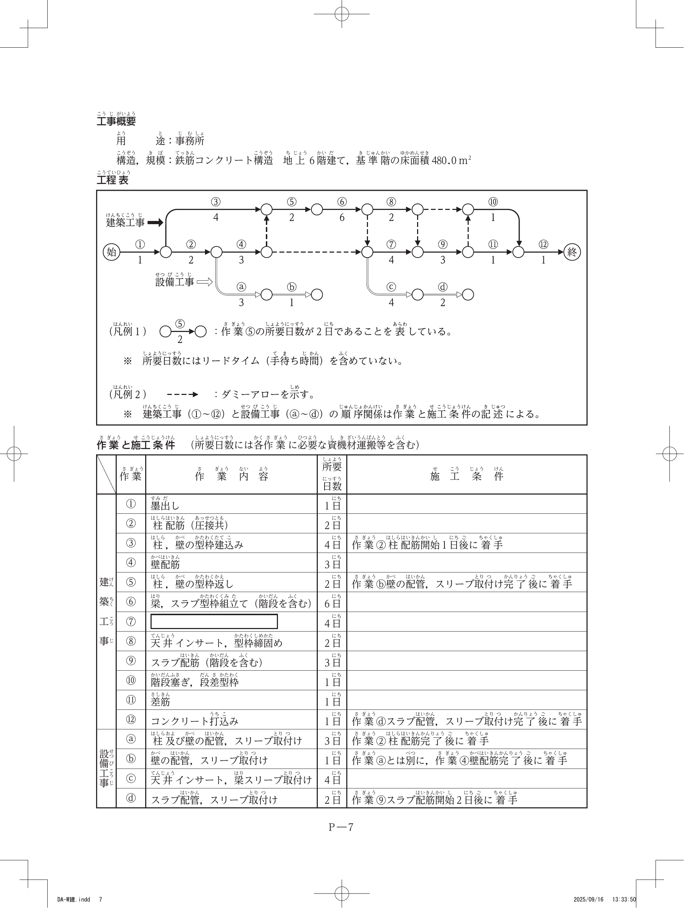

問題1｜施工経験記述（論文）テーマ：品質管理
問1
建築工事の施工者は、設計図書等により工事目的物に要求される品質を把握し、品質管理を的確に行うことが求められる。
【本試験で示された工事概要（令和7年度・出題側提示）】出題側が工事概要を提示する方式 に変更されています。本演習では下記の令和7年度本試験で示された工事概要（事務所ビル新築工事）に基づいて解答してください。
工事概要
工事名 事務所ビル新築工事 主要構造 鉄骨構造 地上7階建て 塔屋1階 主要用途 事務所 用途地域 商業地域 15m道路隣接 工期 2025年2月〜2026年9月 面積 敷地1,110.00㎡／建築800.0㎡／延床5,720.0㎡／最高高さ30.5m／階高3.8m／エレベーター乗用11人乗り2台 屋上工作物 設備基礎：コンクリート立上り基礎／外周部：目隠しルーバー
主な構造仕様
根切深さ 設計GL−3.0m 地下水位 設計GL−3.6m 山留め 鋼矢板（シートパイル）壁工法 基礎 既製コンクリート杭（PHC杭） 構造部材 柱：角形鋼管、梁：H形鋼／床：合成デッキスラブ 耐火被覆 耐火材巻付け工法
主な外部仕上げ
屋上陸屋根 アスファルト保護断熱防水／アルミ製笠木、ステンレス製丸環 外壁 主な外壁：押出成形セメント板＋フッ素樹脂塗装／目地：変成シリコーン系シーリング／断熱：内断熱工法（現場発泡断熱材吹付け） 建具 エントランス：ステンレス製自動扉、強化ガラス＋飛散防止フィルム共／窓：アルミ製サッシ、複層ガラス共（一部排煙窓）
主な内部仕上げ（天井高さ2.9m／壁・天井の下地はすべて軽量鉄骨）
床 事務室：コンクリート直均し＋セルフレベリング＋防塵塗装＋OAフロア＋タイルカーペット／廊下・給湯室：モルタル下地＋長尺ビニル床シート／階段室：モルタル下地＋タイルカーペット、ステンレス製ノンスリップ／エントランスホール：モルタル下地＋花崗岩ジェットバーナー仕上げ 壁 事務室：せっこうボード＋EP塗装／廊下：けい酸カルシウム板＋化粧シート／給湯室・階段室：せっこうボード＋EP塗装／エントランスホール：けい酸カルシウム板＋ボーダータイル 天井 事務室・廊下・給湯室：せっこうボード＋ロックウール化粧吸音板／階段室：鉄骨階段現し＋SOP塗装／エントランスホール：アルミスパンドレル その他 事務室：一部可動間仕切りパネル／給湯室：流し台、吊戸棚／化粧室：トイレブース
主な外構仕様
構内舗装 駐車場：アスファルト舗装 普通車8台／アプローチ：インターロッキング舗装 囲障他 敷地境界：アルミ製化粧フェンス／中木、低木混栽
【設問1】上記工事概要に示す事務所ビル新築工事で行われる工種又は作業において、あなたが統括的な施工の技術上の管理を求められる立場として工事を担当するうえで、品質管理上特に重点を置くべきと考える項目を3つ あげ、それぞれ次の①〜③について具体的に記述しなさい（3つの項目の②及び③はすべて異なる内容とする。各作業は一般的な手順に従って施工されるものとし、施工上必要としない工事及び作業に関する記述は不可）。
【設問2】右に示す工事概要の建築工事に係わらず、現場で行う組織的な品質管理活動 について、次の①及び②を具体的に記述しなさい（設問1の③と同じ内容の記述は不可）。
回答する（参考解答を表示）
Copilotに採点させる
参考解答例（鉄骨造事務所ビルを想定した記述例）
■ 設問1 参考解答例（鉄骨造・3項目）
（項目1）鉄骨工事（高力ボルト接合）
①工種名又は作業名：鉄骨工事（高力ボルト摩擦接合）
②重点を置くべき品質管理項目と理由：高力ボルト接合部の所定の締付け軸力の確保を重点品質管理項目とした。締付け不足や過大締付けは接合部のすべり耐力低下や遅れ破壊の原因となり、構造安全性を損なうため。
③実施すべき内容：トルシア形高力ボルトを一次締め・マーキング・本締めの順に二度締めとし、本締め後にピンテールの破断とマーキングのずれを全数目視確認のうえ記録する。
（項目2）コンクリート工事（合成デッキスラブ）
①工種名又は作業名：コンクリート工事（床スラブ）
②重点を置くべき品質管理項目と理由：荷卸し時のコンクリート温度・スランプ管理を重点品質管理項目とした。工期に夏季を含むため、温度上昇によるスランプ低下やコールドジョイント、ひび割れの発生を防止する必要があるため。
③実施すべき内容：荷卸し時にコンクリート温度が35℃以下、スランプが指定値±2.5cmの範囲であることをロットごとに測定・記録し、超過時は受入れを拒否する。
（項目3）耐火被覆工事（耐火材巻付け工法）
①工種名又は作業名：耐火被覆工事（巻付け工法）
②重点を置くべき品質管理項目と理由：耐火被覆材の所定厚さの確保を重点品質管理項目とした。被覆厚さの不足は所定の耐火性能を満たせず、火災時に鉄骨の急激な強度低下を招くため。
③実施すべき内容：施工後に厚さ測定ピン又は確認ゲージを用いて各部位の被覆厚さが認定仕様の厚さ以上であることを区画ごとに測定・記録し、不足部は増し吹き又は増し巻きで是正する。
■ 設問2 参考解答例
①品質管理活動の内容及び伝達手段又は方法：設計図書から要求される品質項目のうち重要なものを抽出し、重点品質管理項目として品質管理計画書（QC工程表）にまとめて書面化し、着手前の作業所内検討会及び協力会社を交えた打合せで配布・周知し、現場で重点的に管理する。
②もたらされる良い影響：協力会社を含む施工関係者全員が管理すべき要点を共有できるため、手戻りや是正が減り、発注者の要求品質に合致した、満足度の高い品質を効率よく確保できる。
【補足解説】
令和7年度の問題1テーマは「品質管理」。R6以降の新形式どおり、工事概要は出題側が提示（事務所ビル・鉄骨造） し、受検者は経験・知識でその工事に即した記述を行う。設問1は3項目・②③が異なる内容 がポイント。建築設備工事は対象外 。設問2は組織的な品質管理活動 （設問1の③と同じ内容は不可）。
※上記は鉄骨造事務所ビルを想定した参考解答であり、記述式の公式正答は公表されません。自分の経験工種に置き換えて、①②③をセットで具体的に書く練習をすること。
問題2｜仮設物の設置計画（検討すべき事項及び理由）
建築工事における次の1.〜3.の仮設物の設置を計画するに当たり、検討すべき事項及びその理由 を、それぞれ2つ 具体的に記述しなさい。
問2-1
1. 仮設ゴンドラ
回答する
Copilotに採点させる
参考解答例
(1) 検討すべき事項：ゴンドラの積載荷重。理由：作業に必要な人員と工具・材料の総重量が定格積載荷重を超えると転落・落下事故につながるため、予定する作業の積載荷重を検討し、定格を超えないようにする。
(2) 検討すべき事項：作業場所の照度。理由：高所での作業を安全・確実に行うには十分な明るさが必要であり、当該作業を安全に行うために必要な照度を確保できるよう照明を検討する。
【補足解説（他例）】
・ゴンドラを設置する躯体の状況を確認し、設置場所に適した支持金具・アーム台を選定する。
・アーム台により躯体が損傷するおそれがある場合は、その躯体部分の補強材と固定方法を検討する。
問2-2
2. 起伏式（ジブ）タワークレーン
回答する
Copilotに採点させる
参考解答例
(1) 検討すべき事項：基礎・支持地盤の支持力。理由：クレーン本体・つり荷・転倒モーメントによる大きな鉛直・水平荷重が基礎に作用するため、地盤の支持力と基礎の構造が荷重・外力に対して安全であることを検討する。
(2) 検討すべき事項：設置位置と作業半径（揚重範囲）。理由：建物全体への揚重を効率よく行い、かつ敷地外・隣地・道路上空へのジブの旋回を避ける必要があるため、設置位置と作業半径を検討し、つり荷が公衆災害を生じない計画とする。
【補足解説（他例）】
・強風時の自立安定とジブの起伏・旋回ロック方法（休止時のフリー化等）を検討する。
・クライミング方式・マストの控え（壁つなぎ・支持架構）と建物躯体への取付け方法を検討する。
問2-3
3. 枠組足場を用いた棚足場
回答する
Copilotに採点させる
参考解答例
(1) 検討すべき事項：作業床上の積載荷重と建枠の許容支持力。理由：棚足場は天井等の作業のため資材・人員が広範囲に載るため、作業床に作用する積載荷重を検討し、建枠1本当たりの許容支持力を超えないよう建枠の配置間隔を計画する。
(2) 検討すべき事項：作業床の隙間・端部の墜落防止措置。理由：棚足場上では水平移動が多く、床の隙間や端部からの墜落・つまずきの危険があるため、作業床を隙間なく敷き、必要箇所に手すり・幅木を設けることを検討する。
【補足解説（他例）】
・建枠・布枠・脚部のジャッキベース等が水平・鉛直に正しく組まれ、不同沈下しないよう敷板等の基礎を検討する。
・上下作業や材料揚げ下ろしに伴う飛来落下に備え、防護（朝顔・養生メッシュシート）を検討する。
問題3｜工程管理（ネットワーク工程表）
問3
鉄筋コンクリート構造の事務所ビル新築工事における基準階の躯体工事について、右の工事概要、工程表及び作業と施工条件を読み取り、次の1.〜4.の問いに答えなさい。
【工事概要】
用途：事務所
構造・規模：鉄筋コンクリート構造、地上6階建て、基準階の床面積480.0㎡

※ 出典：全国建設研修センター公表 令和7年度1級建築施工管理技術検定 第二次検定 問題3（社内勉強会用抜粋）
設問1：作業⑦の作業内容を記述しなさい。
設問2：工程表及び作業と施工条件から、（始）から（終）までの総所要日数を記入しなさい。
設問3：作業③の最早開始時期（EST）及び最遅開始時期（LST）を記入しなさい。
設問4：作業④のトータルフロート（TF）及び作業⑧のフリーフロート（FF）を記入しなさい。
回答する（解答・解説を表示）
解答・解説（社内勉強会用・林副部長検算）
※ 注意（必読） 令和7年度第二次検定の記述式は公式正答が非公表 のため、本数値は公表問題のネットワーク図・施工条件から算出した検算値 です。勉強会で各自の計算と突合してください。
設問1：
作業⑦＝梁配筋
設問2 総所要日数 ＝ 24日
設問3 作業③ EST ＝ 2日 ／ LST ＝ 3日 （TF＝1日）
設問4 作業④ TF ＝ 0日 （クリティカル）
作業⑧ FF ＝ 2日
クリティカルパス：①→②→④→ⓑ→⑤→⑥→⑦→⑨→⑪→⑫ ＝ 24日
【解き方の手順（林副部長メソッド）／検算根拠】
1. 作業⑦＝梁配筋（設問1） ：RC躯体の基準階は「墨出し→柱・壁配筋→柱・壁型枠建込み→型枠返し→梁・スラブ型枠組立て→梁配筋 →天井インサート・型枠締固め→スラブ配筋→…→コンクリート打込み」の順で進む。⑥梁・スラブ型枠組立て（6日）と⑧天井インサート・型枠締固め（2日）の間に入り、⑨スラブ配筋（3日）に先立つ作業⑦は梁配筋 。
2. 総所要日数＝24日（設問2） ：建築工事①〜⑫と設備工事ⓐ〜ⓓの結合関係（施工条件のダミー）を含めてネットワークを完成させ、（始）から各イベントのESTを順算（先行作業のEST＋所要日数の最大値）して（終）のESTを求める。最長経路は①(1)→②(2)→④(3)→ⓑ(1)→⑤(2)→⑥(6)→⑦(4)→⑨(3)→⑪(1)→⑫(1)＝24日 。
【誤読しやすいポイント】 設備ⓓ経由のパス（…→⑨→ⓓ→⑫）を単純なパス和で足すと25日に見えるが、これは誤り。施工条件「設備ⓓは作業⑨スラブ配筋開始2日後 に着手」＝⑨とⓓはSS+2の並行関係 。⑨のEST＝14、開始2日後＝16からⓓ着手（EST=16）→ⓓ(2日)でEFT=18。一方⑨完了は14+3＝17、⑪⑫経由で（終）＝24。よってⓓは余裕内に収まり総所要は24日 。「→」を全部直列に足すクセで25と取り違えやすいので注意。
3. 作業③のEST＝2／LST＝3（設問3） ：作業③は「作業②柱配筋開始1日後に着手」＝②(EST=1)開始1日後でEST＝2。作業③(4日)はクリティカルパス上に乗らず後続に余裕があるため、LFTから逆算したLST＝3（TF＝LST−EST＝3−2＝1日 ）。
4. 作業④のTF＝0・作業⑧のFF＝2（設問4） ：TF＝当該作業のLST−EST。作業④（壁配筋3日）はクリティカルパス上にあるためEST＝LST、TF＝0日 。FF＝後続作業のEST−当該作業のEST−所要日数。作業⑧（天井インサート・型枠締固め2日）はEST後に後続⑨の着手まで余裕があり、FF＝2日 。
【施工条件（再掲）】
・作業③は作業②柱配筋開始1日後に着手／作業⑤は作業ⓑ壁の配管スリーブ取付完了後に着手／作業⑫は作業ⓓスラブ配管スリーブ取付完了後に着手。
・設備ⓐは作業②柱配筋完了後に着手／設備ⓑは作業ⓐとは別に作業④壁配筋完了後に着手／設備ⓓは作業⑨スラブ配筋開始2日後に着手。
・所要日数：①1 ②2 ③4 ④3 ⑤2 ⑥6 ⑦4 ⑧2 ⑨3 ⑩1 ⑪1 ⑫1／ⓐ3 ⓑ1 ⓒ4 ⓓ2（単位：日）。
※ ネットワーク計算はダミーアローの向きを1本読み違えると数値が変わる。勉強会では各自の工程表（条件式の整理→経路の手追い）を持ち寄って突き合わせること。
📝 演習用メモ欄｜工程表エディタ
上の「解き方の手順」を見ながら、自分でネットワーク（イベント＝○、作業＝線）を描いて経路を手追いしてみましょう。
段（行）＝作業の系列、横方向＝日付として使えます。描いた図はこの端末に自動保存され、JSON／PNGで書き出して勉強会に持ち寄れます。
※スマホでは線が引きにくいので、○（マーカー）を置いていくだけでも工程の整理ができます。線を引きたい場合はPCでの操作がおすすめです。
問題4｜躯体・解体施工（施工上の留意事項）
次の1.〜4.の問いに答えなさい。
問4-1
1. 場所打ちコンクリート杭地業のアースドリル工法 において、スライム処理又は安定液についての施工上の留意事項を2つ、具体的に記述しなさい。
回答する
Copilotに採点させる
参考解答例
(1) 一次スライム処理は掘削完了後に底ざらいバケットで行い、鉄筋かご建込み後の二次スライム処理はトレミー管とサクションポンプ等により孔底のスライムを除去してから、コンクリートを打ち込む。
(2) 安定液は、孔壁の崩壊を防げる範囲でできるだけ低粘性・低比重のものとし、コンクリートとの置換が確実に行えるよう、ろ過装置等で泥水中の砂分・劣化成分を管理する。
【補足解説（他例）】
・スライムが厚く残ると杭の先端支持力不足・沈下の原因となるため、二次処理直後にコンクリートを打設する。
・安定液の比重・粘性・砂分・pHを定期的に測定し、規定値内に管理する。
問4-2
2. コンクリート工事の打込み時において、コールドジョイントの発生を防止する ための施工上の留意事項を2つ、具体的に記述しなさい。
回答する
Copilotに採点させる
参考解答例
(1) 先に打ち込んだコンクリートが凝結を始める前に次の層を打ち重ねられるよう、打重ね時間間隔の限度（外気温25℃未満で150分、25℃以上で120分以内）を守って打込み区画と打込み速度を計画する。
(2) 上下層が一体となるよう、棒形振動機を先に打ち込んだ層に10cm程度挿入して振動を与え、確実に締め固める。
【補足解説（他例）】
・打込み区画の順序を計画し、運搬・打込み・締固めの人員と機器を確保して打込みの中断時間を短くする。
・夏季は運搬中の温度上昇を抑え、荷卸し時のコンクリート温度を管理する。
問4-3
3. 鉄骨工事の耐火被覆において、吹付けロックウール工法 の施工上の留意事項を2つ、具体的に記述しなさい。
回答する
Copilotに採点させる
参考解答例
(1) 吹付け面の鉄骨に付着した油・ミルスケール・浮き錆等を除去し、被覆材が確実に付着するよう下地を清掃してから吹き付ける。
(2) 認定仕様の所定厚さを確保するため、施工後に厚さ測定ピン又は確認ゲージで各部位の被覆厚さを測定・記録し、不足部は増し吹きで是正する。
【補足解説（他例）】
・乾式・半乾式の別に応じ、吹付け距離・角度を一定に保ち、だれ・付着不良が生じないよう施工する。
・所定のかさ密度が得られるよう、材料の配合と吹付け圧を管理する。
問4-4
4. 鉄筋コンクリート構造の建物の解体において、外周部を転倒工法 で解体する場合の施工上の留意事項を2つ、具体的に記述しなさい。
回答する
Copilotに採点させる
参考解答例
(1) 転倒する壁・柱が予定方向へ確実に倒れるよう、転倒側の縁切り（柱・梁・床との縁切り）と引き倒し用の縁部鉄筋の残し方を計画し、1回の転倒部材の大きさ・重量を過大にしない。
(2) 転倒時の衝撃を緩和し床版の損傷・飛散を防ぐため、地盤面に丸太・がれき等の緩衝材を敷き、作業員・重機を転倒範囲の外へ退避させてから転倒させる。
【補足解説（他例）】
・1日の転倒解体量は、その日のうちに小割り・搬出できる範囲とし、転倒部材を場内に積み上げて残さない。
・引き倒しワイヤ・重機の能力を部材重量に対し余裕を見て選定し、合図・立入禁止区画を徹底する。
問題5｜仕上げ施工（五肢択一・語句又は数値の組合せ）
問5
次の1.〜8.の各記述において、（ a ）〜（ c ）に当てはまる最も適当な語句又は数値の組合せ を、下の枠内から1つ選びなさい。
1. アスファルト防水の保護防水密着工法
アスファルト防水の保護防水密着工法において、平場部と立上り部で構成する出隅部及び入隅部は、平場部のルーフィング類の張付けに先立ち、幅（ a ）mm程度のストレッチルーフィングを増張りする。b ）用テープを張り付けた上に、幅（ a ）mm程度のストレッチルーフィングを増張りする。c ）mm程度張り掛けて、（ b ）増張りをする。
解答
選択してください
① a:200／b:補強／c:50
② a:300／b:補強／c:100
③ a:300／b:絶縁／c:50
④ a:300／b:絶縁／c:100
⑤ a:200／b:補強／c:100
2. セメントモルタルによるタイル張り
セメントモルタルによるタイル張りにおいて、まぐさ、庇先端下部など剥落のおそれが大きい箇所に（ a ）タイル以上の大きさのタイルを張る場合、径が0.6mm以上のなまし（ b ）線を剥落防止用引金物として張付けモルタルに塗り込む。必要に応じて、受木を添えて（ c ）時間以上支持する。
解答
選択してください
① a:小口平／b:ステンレス鋼／c:12
② a:小口平／b:ステンレス鋼／c:24
③ a:50二丁／b:鉄／c:24
④ a:50二丁／b:ステンレス鋼／c:12
⑤ a:50二丁／b:鉄／c:12
3. 金属板葺による屋根工事の下葺
金属板葺による屋根工事の下葺きに使用するアスファルトルーフィングは、軒先から水上側へ葺き進め、縦重ねは100mm以上、横重ねは（ a ）mm以上とする。b ）mm程度とし、その他の部分では（ c ）mm以内とし、ルーフィングのたるみやしわを生じないように葺く。
解答
選択してください
① a:200／b:450／c:900
② a:100／b:300／c:600
③ a:200／b:300／c:900
④ a:100／b:450／c:900
⑤ a:200／b:300／c:600
4. 屋内の軽量鉄骨天井下地
屋内の軽量鉄骨天井下地の吊りボルトの間隔は900mm程度とし、周辺部は端から（ a ）mm以内とする。b ）mm程度とし、ボードの一辺の長さが450mm程度以下の場合の直張りは（ c ）mm程度以下とする。
解答
選択してください
① a:200／b:300／c:150
② a:150／b:360／c:150
③ a:150／b:360／c:225
④ a:150／b:300／c:225
⑤ a:200／b:300／c:225
5. 防水形合成樹脂エマルション系複層仕上塗材（防水形複層塗材E）仕上げ
防水形合成樹脂エマルション系複層仕上塗材（防水形複層塗材E）仕上げとする場合、下地のセメントモルタル面を（ a ）仕上げとする。b ）kg/㎡とし、だれ、ピンホール及び塗残しのないように下地を覆うように塗り付ける。c ）回塗りで0.3kg/㎡とし、色むら、だれ、光沢むらの発生のないように均一に塗り付ける。
解答
選択してください
① a:木ごて／b:1.5／c:1
② a:金ごて／b:1.7／c:1
③ a:木ごて／b:1.7／c:2
④ a:金ごて／b:1.5／c:2
⑤ a:金ごて／b:1.7／c:2
6. 防火区画に用いる防煙シャッター
防火区画に用いる防煙シャッターは、表面がフラットでガイドレール内での遮煙性を確保できる（ a ）形のスラットが用いられる。b ）の遮煙機構は、シャッターが閉鎖したときに漏煙を抑制する構造で、その材料は不燃材料、準不燃材料又は難燃材料とする。c ）mm以上とする。
解答
選択してください
① a:オーバーラッピング／b:まぐさ／c:80
② a:オーバーラッピング／b:方立／c:80
③ a:インターロッキング／b:まぐさ／c:90
④ a:インターロッキング／b:方立／c:80
⑤ a:オーバーラッピング／b:まぐさ／c:90
7. 塗装工事における研磨紙ずり
塗装工事における研磨紙ずりは、素地の汚れや錆、下地に付着している塵埃を取り除いて素地や下地の表面を清浄で（ a ）状態とし、かつ、次工程で適用する塗装材料の（ b ）を確保するための足掛かりをつくり、仕上りを良くするために行う。c ）塗膜及びパテが十分乾燥した後に行い、塗膜を過度に研がないようにする。
解答
選択してください
① a:粗面／b:付着性／c:下層
② a:平滑／b:付着性／c:下層
③ a:粗面／b:美装性／c:上層
④ a:平滑／b:付着性／c:上層
⑤ a:粗面／b:美装性／c:下層
8. 内装工事における軽量鉄骨下地へのせっこうボード取付け
内装工事において軽量鉄骨下地にせっこうボードを取り付ける場合、下地の裏面に（ a ）mm以上の余長が得られる長さのドリリングタッピンねじを用いる。b ）mm、中間部300mmとし、いずれもボード周辺部から10mm程度内側の位置で留め付け、ねじの頭がボードの（ c ）ように確実に締め込む。
解答
選択してください
① a:10／b:200／c:表面より少しへこむ
② a:5／b:250／c:表面と同面となる
③ a:5／b:200／c:表面より少しへこむ
④ a:10／b:200／c:表面と同面となる
⑤ a:10／b:250／c:表面より少しへこむ
採点する（8問一括）
リセット
正答の解説を表示
各小問の公表正答肢（令和7年度）
1. 正答：④ （a:300／b:絶縁／c:100）
2. 正答：② （a:小口平／b:ステンレス鋼／c:24）
3. 正答：③ （a:200／b:300／c:900）
4. 正答：③ （a:150／b:360／c:225）
5. 正答：⑤ （a:金ごて／b:1.7／c:2）
6. 正答：⑤ （a:オーバーラッピング／b:まぐさ／c:90）
7. 正答：② （a:平滑／b:付着性／c:下層）
8. 正答：① （a:10／b:200／c:表面より少しへこむ）
※ 出典：全国建設研修センター公表「令和7年度1級建築施工管理技術検定 第二次検定 五肢択一式問題の正答肢」
問題6｜法規（穴埋め6箇所）
問6
次の1.〜3.の各法文において、（ ）に当てはまる正しい語句を、下の該当する枠内から1つ選びなさい。
1. 建設業法（第25条の27：施工技術の確保に関する建設業者等の責務）
第25条の27 建設業者は、建設工事の担い手の（ ① ）及び確保その他の施工技術の確保に努めなければならない。② ）するために必要な知識及び技術又は技能の向上に努めなければならない。
穴①
選択してください
① 参入
② 入職
③ 訓練
④ 指導
⑤ 育成
穴②
選択してください
① 管理
② 計画
③ 実施
④ 着手
⑤ 完成
2. 建築基準法施行令（第136条の3：根切り工事、山留め工事等を行う場合の危害の防止）
第136条の3 2 建築工事等における地階の根切り工事その他の深い根切り工事（これに伴う山留め工事を含む。）は、（ ③ ）による地層及び地下水の状況に応じて作成した施工図に基づいて行なわなければならない。④ ）を避ける等その傾斜又は倒壊による危害の発生を防止するための措置を講じなければならない。
穴③
選択してください
① 測量
② 地盤調査
③ 物理探査
④ 土質試験
⑤ 標準貫入試験
穴④
選択してください
① 急激な排水
② 急激な湧水
③ 地盤の変形
④ 地盤の崩壊
⑤ 地盤の沈下
3. 労働安全衛生法（第30条：特定元方事業者等の講ずべき措置）
第30条 特定元方事業者は、その労働者及び関係請負人の労働者の作業が同一の場所において行われることによって生ずる（ ⑤ ）災害を防止するため、次の事項に関する必要な措置を講じなければならない。⑥ ）を行うこと。
穴⑤
選択してください
① 事故
② 重大
③ 特定
④ 労働
⑤ 公衆
穴⑥
選択してください
① 支援
② 援助
③ 評価
④ 改善
⑤ 監督
採点する（6箇所一括）
リセット
法令本文と公表正答（令和7年度）
1. 建設業法 第25条の27（施工技術の確保に関する建設業者等の責務）
① 正答：⑤ 育成 ／ 建設業者は、建設工事の担い手の育成 及び確保その他の施工技術の確保に努めなければならない。
② 正答：③ 実施 ／ 建設工事に従事する者は、建設工事を適正に実施 するために必要な知識及び技術又は技能の向上に努めなければならない。
2. 建築基準法施行令 第136条の3（根切り・山留め工事等の危害防止）
③ 正答：② 地盤調査 ／ 深い根切り工事は地盤調査 による地層及び地下水の状況に応じて作成した施工図に基づいて行う。
④ 正答：① 急激な排水 ／ 近接工作物の基礎・地盤を補強して構造耐力の低下を防止し、急激な排水 を避ける等の措置を講じる。
3. 労働安全衛生法 第30条（特定元方事業者等の講ずべき措置）
⑤ 正答：④ 労働 ／ 同一場所での作業によって生ずる労働 災害を防止するため必要な措置を講じる。
⑥ 正答：② 援助 ／ 関係請負人が行う安全衛生教育に対する指導及び援助 を行う。
※ 出典：全国建設研修センター公表「令和7年度1級建築施工管理技術検定 第二次検定 五肢択一式問題の正答肢」（問題6）